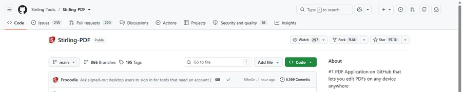
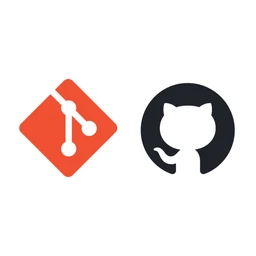
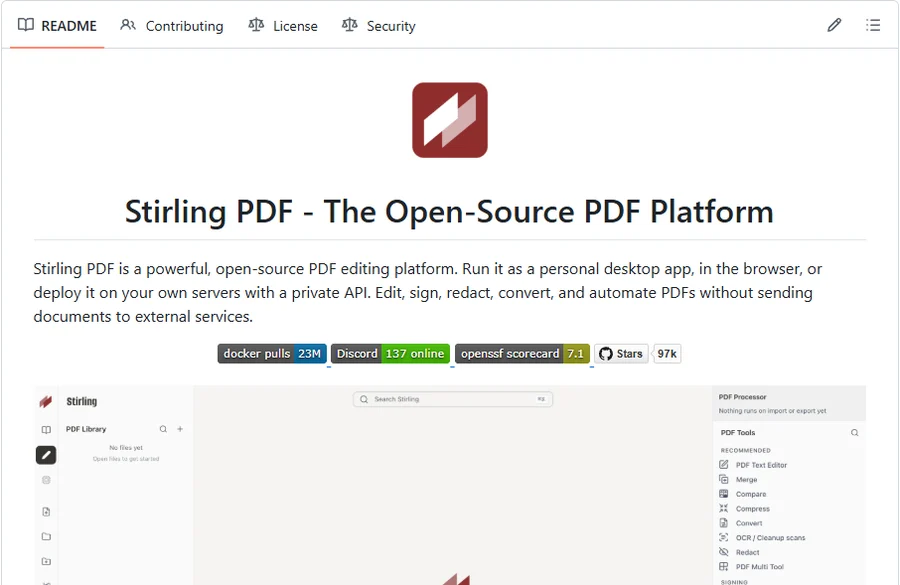
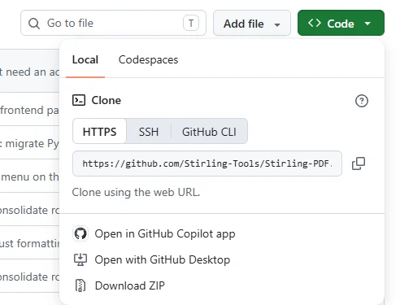
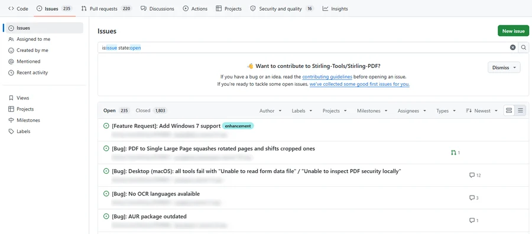
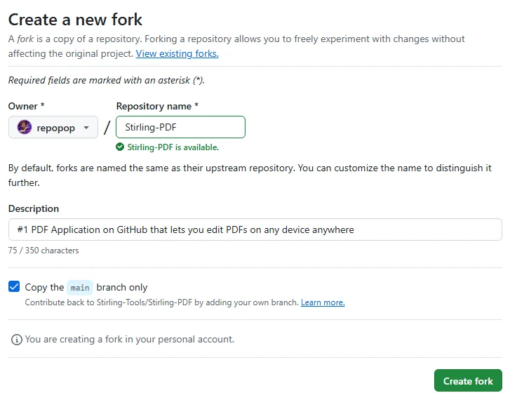

1
Le nom, les étoiles et le Fork
github.com › Propriétaire / Projet
En haut : le nom du projet, puis Star (les étoiles = les likes, ici 97 100) et Fork (le nombre de copies).


Git garde chaque version de ton projet, GitHub le met en ligne : enfin la différence, et comment lire une page GitHub sans se perdre.

Git est un logiciel qui s'installe sur ton ordinateur et garde l'historique de ton projet. GitHub est un site web qui héberge des projets Git en ligne pour les partager et travailler à plusieurs. On peut utiliser Git sans GitHub, et télécharger depuis GitHub sans jamais toucher à Git.
Chaque enregistrement (un commit) est une photo de ton projet. Tout plante ? Tu reviens à la dernière version qui marchait et tu reprends calmement.
Gratuit, open sourceLa branche principale (souvent main) contient la version qui marche. Pour tester une idée, tu crées une branche à côté : si ça marche, tu la fusionnes (merge) ; sinon, tu la jettes, sans rien casser.
Sans risqueUne page par projet : le code, le README (mode d'emploi), les étoiles (les likes), les Issues (bugs et idées) et les Releases (versions à télécharger).
Compte gratuitUn Fork, c'est ta copie d'un projet sur ton compte, pour l'améliorer. Tu proposes ensuite tes changements à l'auteur avec une pull request : il peut les accepter.
Compte requisTout se lit sur la page d'un projet, ici Stirling-PDF (vidéo RepoPop n°01). GitHub est en anglais : voici où regarder.
En haut : le nom du projet, puis Star (les étoiles = les likes, ici 97 100) et Fork (le nombre de copies).

Sous la liste des fichiers : à quoi sert le projet, comment l'installer, captures d'écran.

Le bouton vert Code donne le code source en ZIP ou l'adresse pour le cloner avec Git. Les programmes prêts à installer sont dans Releases.

La liste des bugs et des idées signalés aux créateurs. New issue pour en ouvrir un (compte requis).

Crée une copie du projet sur ton compte, pour l'améliorer. Tes changements se proposent ensuite à l'auteur par une pull request.

Repérer la bonne version dans Releases plutôt que le code source brut.
Étoiles, date du dernier commit, Issues ouvertes, licence : de quoi savoir si un projet est vivant.
Ouvrir une Issue claire : ce que tu as fait, ce que tu attendais, ce qui s'est passé.
Git sur tes propres fichiers (scripts, site, notes) : chaque version gardée, retour arrière en une commande.
Fork, modification, pull request : c'est comme ça que des milliers de bénévoles améliorent l'open source.
GitHub est le plus connu, mais d'autres sites hébergent aussi des projets Git.
Bon pour : tout le monde : le plus grand catalogue de projets open source ; appartient à Microsoft depuis 2018.
Bon pour : les équipes qui veulent tout au même endroit, ou héberger chez elles.
Bon pour : les projets libres qui préfèrent une association à but non lucratif basée à Berlin.

Chaque vidéo RepoPop Décode t'explique un sujet IA ou tech en moins d'une minute, avec sa fiche complète comme celle-ci.